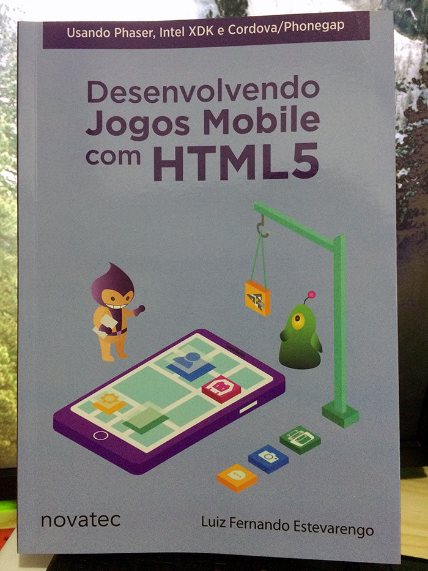

Neste livro, publicado pela Editora Novatec, o autor Luiz Fernando Estevarengo ensina conceitos básicos de desenvolvimento de jogos para dispositivos móveis utilizando os frameworks Phaser, Intel XDK e Cordova/Phonegap.
O livro é bem direito ao ponto: explica como baixar e configurar os frameworks utilizados; explica o básico de HTML e CSS; apresenta um bom resumo sobre JavaScript; desenvolve três jogos diferentes (Frogger, Plataforma e Top Down); explica como publicar o jogo nas lojas Google Play, App Store e Windows Store. Esta organização dividiu muito bem o livro e o torna fácil de consultar a procura de alguma informação, e torna a leitura bem prática.

Os exemplos de jogos escolhidos foram ótimos. No primeiro jogo desenvolvido, similar ao Frogger, muitos conceitos básicos são ensinados para que o leitor possa desenvolver o jogo. Não é uma explicação teórica e profunda, mas é o básico para entender como funciona o game loop e máquinas de estado, por exemplo. O segundo jogo é de plataforma, similar ao Super Mario Bros, e parte do princípio que o leitor entendeu bem os conceitos do capítulo anterior e introduz novidades (por isso é importante fazer o projeto junto, para não ter dúvidas no próximo capítulo). O terceiro e último jogo é um top down, similar a um Zelda ou Final Fantasy do SNES, mais conceitos são apresentados para a conclusão deste projeto.
Pelos capítulos são apresentados o básico de detecção de colisão, som, utilização de sprites, animações, inputs, e outras coisas básicas para começar a desenvolver um jogo. Com certeza ao final do livro (se o leitor fizer os projetos) é possível ter uma boa noção para começar o seu próprio projeto e aprender mais sobre desenvolvimento de jogos. No final do livro tem um bom resumo de como exportar e publicar seu jogo nas principais lojas de aplicativos e jogos mobile.
Este livro é ótimo para quem tem noção de HTML/CSS/JavaScript e quer começar a desenvolver jogos. Mesmo quem não tem noção nenhuma de programação, e está disposta a aprender, vai gostar de ler este livro. Porém, se você já tem um conhecimento de programação, ou mesmo desenvolvimento de jogos, este livro pode ser básico demais. O código fonte dos projetos estão no GitHub do autor.
Na minha opinião sobre a tecnologia, HTML5 não serve para fazer jogos mobile, como expliquei neste post. É uma ótima tecnologia para aprender e fazer os primeiros jogos, mas projetos maiores serão melhores atendidos por tecnologias como Unity ou Unreal, entre outras. Não é uma crítica ao livro (que é muito bom para iniciantes), mas sim a tecnologia que é limitada para dispositivos móveis.
Muito obrigado a Editora Novatec por me enviar este livro para fazer esta review. Você pode comprar este livro e outros sobre desenvolvimento de jogos no site da Novatec, e utilize o código GAMEDEVELOPER para ter desconto na compra!